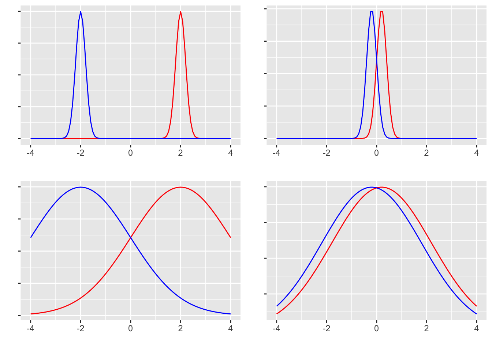

Code
pacman::p_load(tidyverse)
set.seed(17)
n <- 10
mu <- 4
X <- rnorm(n, mean = mu, sd = 1)
print(X) [1] 2.984991 3.920363 3.767013 3.182732 4.772091 3.834388 4.972874 5.716534
[9] 4.255237 4.366581平均値差の検定は，実験計画の結論を出すために用いられる手段である。無作為割り当てによって個人差や背景要因が相殺され，平均的な因果効果を検証することができるからである。 その結果を一般化するためには，やはり推測統計学の知見が必要であり，サンプルサイズやタイプ1,2エラーが関わってくることに変わりはない。
まず配置標本検定の例から始める。母平均がわかっている，あるいは理論的に仮定される特定の値に対して，標本平均が統計的に有意に異なっていると言って良いかどうかの判断をするときに用いる。 たとえば7件法のデータを取ったときに，ある項目の平均が中点4より有意に離れていると言って良いかどうか，といった判定をするときに用いる。かりに，サンプルサイズ10で7件法のデータが得られたとしよう。ここでは平均4,SD1の正規乱数を10件生成することで表現する。実際にはこの値を，人に対する尺度カテゴリへの反応として得ているはずである。
pacman::p_load(tidyverse)
set.seed(17)
n <- 10
mu <- 4
X <- rnorm(n, mean = mu, sd = 1)
print(X) [1] 2.984991 3.920363 3.767013 3.182732 4.772091 3.834388 4.972874 5.716534
[9] 4.255237 4.366581今回，標本平均は4.177であり，これより極端な値が\(\mu = 4\)の母集団から得られるかどうかを検定する。帰無仮説検定の手順にそって進めていくと，以下のようになる。
このあと，検定統計量の計算と判定である。これをRはt.test関数で一気に処理できる。
result <- t.test(X, mu = mu)
print(result)
One Sample t-test
data: X
t = 0.6776, df = 9, p-value = 0.5151
alternative hypothesis: true mean is not equal to 4
95 percent confidence interval:
3.585430 4.769131
sample estimates:
mean of x
4.177281 結果として，今回の検定統計量の実現値は0.678であり，自由度9のt分布からこれ以上の値が出てくる確率は，0.515であることがわかる。これは5%水準と見比べてより大きいので，レアケースではないと判断できる。つまり，母平均4の正規母集団から，4.177の標本平均が得られることはそれほど珍しいものではなく，統計的に有意に異なっていると判断するには及ばない，ということである。
レポートなどに記載するときは，これら実現値やp値を踏まえて「\(t(9)=0.66776,p=0.5151 ,n.s.\)」などとする。ここでn.s.はnot significantの略である。
さてこの例では，母平均4の正規乱数を生成し，その平均が4と異なるとはいえない，と結論づけた。これは一見，当たり前のことのようであり，無意味な行為におもえるかもしれない。しかし次の例を見てみよう。
n <- 3
mu <- 4
X <- rnorm(n, mean = mu, sd = 1)
mean(X) %>%
round(3) %>%
print()[1] 5.04result <- t.test(X, mu = mu)
print(result)
One Sample t-test
data: X
t = 5.1723, df = 2, p-value = 0.03541
alternative hypothesis: true mean is not equal to 4
95 percent confidence interval:
4.174825 5.904710
sample estimates:
mean of x
5.039768 ここではサンプルサイズ\(n=3\)であり，標本平均が5.04であった。このときt値は5%臨界値を上回っており，「母平均4のところから得られる値にしては極端」であるから，統計的に有意に異なる，と判断することになる。乱数生成時は平均を確かに4に設定したが，母平均から取り出したごく一部が，そこから大きく離れてしまうことはあり得るのである。
続いて二標本の検定について考えよう。実験群と統制群のように，無作為割り当てをすることで平均因果効果をみる際に行われるのが，この検定である。帰無仮説は「群間差はない」であり，対立仮説はその否定である。また，正規母集団からの標本を仮定するので，検定統計量はここでもt分布に従う値になる。帰無仮説検定の手順に沿って，改めて確認しておこう。
これを検証するために，サンプルデータを乱数で生成しよう。 まず，各群のサンプルサイズをn1,n2とする。ここでは話を簡単にするため，サンプルサイズは両群ともに10とした。つぎに両群の母平均だが，群1の母平均を\(\mu_1\)，群2の母平均を\(\mu_2 = \mu_1 + \delta\)で表現した。この\(\delta\)は差分であり，これが\(\delta=0\)であれば母平均が等しいこと，\(\delta \neq 0\)であれば母平均が異なることになる。最後に両群の母SDを設定した。
ここでの検定は，この差分\(d\)が母平均0の母集団から得られたと判断して良いかどうか，という形で行われる。検定統計量\(T\)は，次式で算出されるものである。
\[ T = \frac{d - \mu_0}{\sqrt{U^2_p/\frac{n_1n_2}{n_1+n_2}}}\]
ここで\(d\)は二群の標本平均の差であり，\(U^2_p\)はプールされた不偏分散と呼ばれ，二群を合わせて計算された全体の母分散推定量である。各群の標本分散をそれぞれ\(S^2_1, S^2_2\)とすると，次式で算出される。
\[ U^2_p = \frac{n_1S^2_1+ n_2S^2_2}{n_1 + n_2 -2} \]
これらの式はつまり，サンプルサイズの違いを考慮するため，一旦両群の標本分散に各サンプルサイズを掛け合わせ，プールした全体のサンプルサイズから各々\(-1\)をすることで全体として不偏分散にしている。
これを踏まえて，具体的な数字で見ていこう。 その上で乱数でデータを生成し，その標本平均を確認した上で，t.test関数によって検定を行っている。
n1 <- 10
n2 <- 10
mu1 <- 4
sigma <- 1
delta <- 1
mu2 <- mu1 + (sigma * delta)
set.seed(42)
X1 <- rnorm(n1, mean = mu1, sd = sigma)
X2 <- rnorm(n2, mean = mu2, sd = sigma)
X1 %>%
mean() %>%
round(3) %>%
print()[1] 4.547X2 %>%
mean() %>%
round(3) %>%
print()[1] 4.837result <- t.test(X1, X2, var.equal = TRUE)
print(result)
Two Sample t-test
data: X1 and X2
t = -0.49924, df = 18, p-value = 0.6237
alternative hypothesis: true difference in means is not equal to 0
95 percent confidence interval:
-1.506473 0.927980
sample estimates:
mean of x mean of y
4.547297 4.836543 今回の母平均は\(\mu_1 = 4, \mu_2 = 4+1\)にしているが，標本平均は4.547と4.837であり，標本上では大きな差が見られなかった。結果として，t値は0.4992369であり，自由度18のもとでのp値は0.6236593である。5%水準を上回る値であるから，結論としては対立仮説を採択するには至らない，差があるとはいえない，である。
今回の設定では母平均に差があるはず(\(4 \neq 4 + 1\))なのだから，これは誤った判断で，タイプ2エラーが生じているケースということになる。研究実践場面では，母平均やその差については知り得ないのだから，このような判断ミスが生じていたかどうかは分かり得ないことに留意しよう。
なお，ここではわかりやすく2群であることを示すためにX1,X2と2つのオブジェクトを用意したが，実践的にはデータフレームの中で群わけを示す変数があり，formulaの形で次のように書くことが多いだろう。
dataSet <- data.frame(group = c(rep(1, n1), rep(2, n2)), value = c(X1, X2)) %>%
mutate(group = as.factor(group))
t.test(value ~ group, data = dataSet, var.equal = TRUE)
Two Sample t-test
data: value by group
t = -0.49924, df = 18, p-value = 0.6237
alternative hypothesis: true difference in means between group 1 and group 2 is not equal to 0
95 percent confidence interval:
-1.506473 0.927980
sample estimates:
mean in group 1 mean in group 2
4.547297 4.836543 先ほどのt.test関数には，var.equal = TRUEというオプションが追加されていた。これは2群の分散が等しいと仮定した場合の検定になる。t検定は歴史的にこちらが先に登場しているが，2群の分散が等しいかどうかはいきなり前提できるものでもない。等分散性の検定は，Levene検定を行うのが一般的であり，R においては，carパッケージやlawstat パッケージが対応する関数を持っている。ここではcarパッケージの leveneTest関数を用いる例を示す。
pacman::p_load(car)
leveneTest(value ~ group, data = dataSet, center = mean)Levene's Test for Homogeneity of Variance (center = mean)
Df F value Pr(>F)
group 1 2.9405 0.1035
18 この結果を見ると，p値から明らかなように，2群の分散が等しいという帰無仮説が棄却できなかったので，等しいと考えてt検定に進むことができる。もしこれが棄却されてしまったら，2群の分散が等しいという帰無仮説が成り立たないのだから，等分散性の仮定を外す必要がある。実行は簡単で，var.equalをFALSEにすれば良い。
result2 <- t.test(value ~ group, data = dataSet, var.equal = FALSE)
print(result2)
Welch Two Sample t-test
data: value by group
t = -0.49924, df = 13.421, p-value = 0.6257
alternative hypothesis: true difference in means between group 1 and group 2 is not equal to 0
95 percent confidence interval:
-1.5369389 0.9584459
sample estimates:
mean in group 1 mean in group 2
4.547297 4.836543 よく見ると，タイトルがWelch Two Sample t-testに変わっている。Welchの補正が入ったt検定という意味である。また自由度が実数(13.421)になっているが，このようにt分布の自由度を調整することで等分散性の仮定から逸脱した場合の補正となる。もちろん報告する際は「\(t(\) 13.421 \()=\) -0.499, \(p=\) 0.626」のように書くことになるから，自由度が実数であれば補正済みであると考えられるだろう。
しかし，分散が等しいという仮定は，等しくない場合の特殊な場合であるから，最初からWelchの補正がはいった検定だけで十分である。このような考え方から，Rにおけるt.test 関数のデフォルトではvar.equal = FALSEとなっており，特段の指定をしなければ等分散性の仮定をしない。こちらの方が検定を重ねることがないので，より望ましい。
今回の例は，仮想データとして\(\mu_1 = 4,\mu_2 = \mu_1 + \sigma d\)であり，明らかに\(\mu_1 \neq \mu_2\)なのだが，有意差を検出するには至らなかった。統計的な有意差はあくまでも「統計的な」観点からのものであり，我々が現実に検証したいのは本当に差があるかどうか，いわば「実質的な差」があるかどうかであるのだから，統計的な有意差を得ることを目的にするのははっきりと不適切な目標設定であると言えるだろう1。
ところで，統計的に差があるとはっきり言えるのはどのような時だろうか。これは次の4つのデータの分布を見てもらうとわかりやすい。

左列は平均差が大きいデータ，右列は小さいデータである。 上段は分散が小さいデータ，下段は大きいデータである。 この4つそれぞれのシーンにおいて，「差がある」と判断しやすいのはどれかを考えてみるとよい。当然，左上のシーンが最も明確に差があると言えるであろう。なぜなら，両群が明確に分かれており，群間の重複がないからである。左下は同じ平均値差であっても，群内の広がりが大きいから群間の重複がみられるため，「差がある」という判断を受けても各群の中には該当しないケースがちらほらみられることだろう。右上パネルのようなケースでは，重複は少ないが差が小さいため，「差がある」と判断できるかどうかが微妙である。右下に至っては，差も小さく分布の重複も大きいから，「差がある」と判断しても該当しないケースが多くなる。たとえば「男性は女性よりも力が強い(体力・筋力に差がある)」というデータがあったとしても，「女性より非力な男性」もかなり多く存在するだろう。そういう反例が多くみられるような場合，統計的に差があるという結果が示されたとしても，受け入れられないのではないだろうか。
ここから明らかなように，差の判断には平均値差だけでなく分散も関わってくる。そこで平均値差を標準偏差で割った，標準化された差が重要になってくるのであり，これが効果量と呼ばれるものである2。
今回2群の差のデータを作る時に，\(\sigma d\) としたが，平均値差の効果量esは， \[ es = \frac{\mu_1 - \mu_2}{\sigma} \]
で表現されるから，\(d\)が効果量を表していたのである。もちろん我々は母平均，母SDなどを知り得ないのでこれもデータから推定する他ない。幸いRにはeffsizeパッケージなど，効果量を算出するものが用意されている。
pacman::p_load(effsize)
cohen.d(value ~ group, data = dataSet)
Cohen's d
d estimate: -0.2232655 (small)
95 percent confidence interval:
lower upper
-1.165749 0.719218 cohen.d(value ~ group, data = dataSet, hedges.correction = TRUE)
Hedges's g
g estimate: -0.2138318 (small)
95 percent confidence interval:
lower upper
-1.1162608 0.6885973 平均値差の検定の後は，ここに示したCohenのdやHedgesのgといった効果量を添えて報告することが一般的である。
実験群と統制群のように異なる2群ではなく，プレポスト実験のように対応がある2群の場合は，t検定の定式化が異なる。対応がないt検定の場合は，群平均の差\(\mu_1 - \mu_2\)の分布を考えたが，対応がある場合は個々の測定の差，つまり\(X_{i1} - X_{i2} = D_i\)を考える。この一つの標本統計量を検定するのだから，一標本検定の一種であるとも言える。またこのDの分布の標準誤差は，標本標準誤差\(U_D\)を使った\(U_D/\sqrt{n}\)を使って推定する3。検定統計量\(T\)は，次式で算出される。
\[ T = \frac{\bar{D}}{U_D/\sqrt{n}} = \frac{\sum D_i/n}{\sqrt{\frac{\frac{1}{n-1}\sum(D_i-\bar{D})^2}{n}}}\]
検定にあたっては，t.test関数の引数pairedをTRUEにするだけで良い。
仮想データを作って演習してみよう。データの組成については，2種類のアプローチで説明が可能である。ひとつは次のシミュレーションで表されるような形である。
n <- 10
mu1 <- 4
sigma <- 1
d <- 1
X1 <- rnorm(n, mu1, sigma)
X2 <- X1 + sigma * d + rnorm(n, 0, sigma)
t.test(X1, X2, paired = TRUE)
Paired t-test
data: X1 and X2
t = -1.8036, df = 9, p-value = 0.1048
alternative hypothesis: true mean difference is not equal to 0
95 percent confidence interval:
-1.4339112 0.1617193
sample estimates:
mean difference
-0.6360959 すなわち，第一の群が\(\mu_1\)を平均にばらついた実現値として得られ，第二の群はその実現値に一定の効果\(\sigma *d\)が加わり，その測定にさらに誤差がつく形である。この方法は具体的なデータ生成プロセスをそのまま模したような形でデータを作っているが，測定誤差を二重に計上している点が気になるかもしれない。
もう一つの考え方は，プレポスト型のデータに限らず，何らかの形で「対応がある」ことも表現できるものである。対応があるということは，2つのデータがそれぞれ独立した一変数正規分布から得られているのではなく，二変数正規分布から得られると考えるのである。二変数正規分布は，それぞれの変数は正規分布しているが，両者の間に相関があると考えるものである。変数が一つだけの正規分布は \[X \sim N(\mu,\sigma)\] で表現されているのに対し，複数の変数を同時に生成する多変数(多次元)正規分布Multivariate Normal Distributionは，以下のように表現される。 \[ \mathbf{X} \sim MVN(\mathbf{\mu},\mathbf{\Sigma})\]
ここで\(\mathbf{X}\)や\(\mathbf{\mu}\)は\(n\)次元ベクトルであり，\(\mathbf{\Sigma}\)は分散共分散行列を表している。二変数の場合は以下のように書くことができる。
\[\mathbf{\Sigma} = \begin{pmatrix} \sigma_1^2 & \sigma_{12}\\ \sigma_{21} & \sigma_2^2 \end{pmatrix} = \begin{pmatrix} \sigma_1^2 & \rho_{12}\sigma_1\sigma_2 \\ \rho_{21}\sigma_2\sigma_1 & \sigma_2^2 \end{pmatrix}\]
共分散\(\sigma_{ij}\)は相関係数\(\rho_{ij}\)を用いて書けることからわかるように，変数間に相関があることを想定してデータを生成するのである。この組成に従った仮想データの作成は以下のとおりである。
pacman::p_load(MASS) # 多次正規乱数を生成するのに必要
n <- 10
mu1 <- 4
sigma <- 1
d <- 1
mu <- c(mu1, mu1 + sigma * d)
rho <- 0.4
SIG <- matrix(c(sigma^2, rho * sigma * sigma, rho * sigma * sigma, sigma^2), ncol = 2, nrow = 2)
X <- mvrnorm(n, mu, SIG)
t.test(X[, 1], X[, 2], paired = TRUE)
Paired t-test
data: X[, 1] and X[, 2]
t = -2.4313, df = 9, p-value = 0.0379
alternative hypothesis: true mean difference is not equal to 0
95 percent confidence interval:
-1.96934592 -0.07095313
sample estimates:
mean difference
-1.02015 効果量については，対応のないt検定の場合と同じで良い。
cohen.d(X[, 1], X[, 2])
Cohen's d
d estimate: -1.04088 (large)
95 percent confidence interval:
lower upper
-2.04204357 -0.03971697 cohen.d(X[, 1], X[, 2], hedges.correction = TRUE)
Hedges's g
g estimate: -0.9968994 (large)
95 percent confidence interval:
lower upper
-1.9510179 -0.0427809 ここまでの検定では，主に「差があるかどうか」といった仮説に対応するものを扱ってきた。差があるかどうか，というのはその差がプラスの方向にでているのか，マイナスの方向に出ているのかといったことを問題にしていない。そこで検定統計量の分布についても，分布の両裾を考えて有意水準を設定していた。
しかしプレポスト実験などでは，効果が「上がった」のか「下がった」のか，ということが大きな関心時でもあることが多いだろう。効果がある，ただし逆効果である，というのでは意味がないからである。このように方向性をもった仮説を検証する場合は，検定統計量の分布も一方向だけ考えればよく，t.test関数にはalternativeオプションをつかって表現する。
t.test(x,y,alternatives = "less") とすると\(x < y\)の帰無仮説を検証することになるし，alternatives = "greater"とすると\(x > y\)の帰無仮説を検証することになる。デフォルトではalternatives = "two.sided"であり，両側検定が選ばれている。
ただし，両裾から片裾にかわるということは，検定統計量が超えるかどうかの判断をする臨界値が小さくなることでもある。必然的に，片裾(片側検定)のほうが緩やかな基準で検定をしていることにもなる。デフォルトで普段から厳しく検定しているから大丈夫だろう，というのも一つの考え方だが，やはり本来の研究仮説に適した帰無仮説の設定をするべきだろう。
平均が50、標準偏差が10の正規分布からランダムに選んだ30個のサンプルを用意し，このサンプルの平均が母集団の平均と異なるかどうかを検定してください。検定結果を，心理学のフォーマット(心理学会編「論文執筆投稿の手引き」)に準拠した書き方で，結果を記述してください。
以下のデータセットを使用して，2つの独立した群の平均に差があるかどうかをt検定してください。検定結果を，心理学のフォーマット(心理学会編「論文執筆投稿の手引き」)に準拠した書き方で，結果を記述してください。 \[ group1 =\{45, 50, 55, 60, 65 \} \] \[ group2 = \{57, 60, 62, 77, 75 \} \]
多次元正規分布を用いた仮想データ生成方で，対応のあるt検定の練習をしましょう。サンプルサイズを\(n=20\)とし, 平均ベクトル\(\mu = (12, 15)\), 分散共分散行列\(\Sigma = \begin{pmatrix} 4 & 2.8 \\ 2.8 & 4\end{pmatrix}\)の多次元正規分布から作られた乱数を使って，対応のあるt検定をしてください。検定結果を，心理学のフォーマット(心理学会編「論文執筆投稿の手引き」)に準拠した書き方で，結果を記述してください。
自由度が10, 20, 30のt分布のグラフを，標準正規分布のグラフとともに描画してください。自由度が増えるとt分布がどのように変化するでしょうか。
自由度が15のt分布において、有意水準5%の片側検定と両側検定の臨界値(検定の判断基準となる理論値)を求めてください。
たとえば物理学などのシーンでは，測定の精度が高く，単一の物理世界を対象にした検証を行うのだから，予測が真であるか偽であるかを確率的に考えるような必要はない。そのような世界における検証–あえて理論的な正しさが明確な世界，と表現するが–であれば，統計的な差があるかどうかの情報はあくまでも理論を支持するおまけ情報にすぎない。いわば統計的検定の結果を報告するのは，論文を書くためのレトリックである。例えば，ニュートンの運動法則やアインシュタインの相対性理論などの物理法則の検証では，測定誤差の範囲内で理論値と実験値が一致するかどうかが重要であり，統計的な有意性は二次的な情報に過ぎない。翻って，人間を対象にした小サンプルの科学である心理学は，統計的な判断に頼らざるを得ないという側面はあるだろう。しかしだからと言って，実質的な差が本質的であることを忘れてしまっては本末転倒である。↩︎
統計的な有意差よりも効果量，効果量よりも実質的な差のほうが意味のある差であることを忘れてはならない。詳しくは 豊田 (2009) を参照。↩︎
対応があるケースを考えているので，当然\(n\)は前後の群で同数である。↩︎